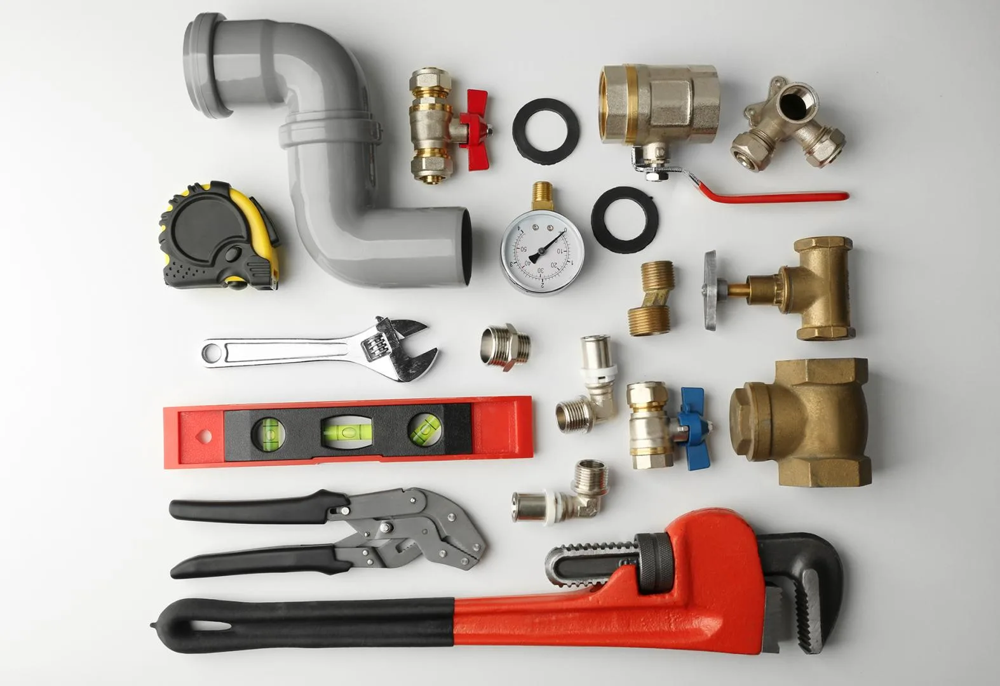

Chauffage et climatisation
Nous installons vos équipements (chaudières, poêles…) et assurons leur mise en marche. Puis nous vous conseillons pour une utilisation optimale.


Un bureau d’études
Notre bureau d’études spécialisé en chauffage et climatisation vous conseille sur la faisabilité des travaux et propose des solutions adaptées, pour des installations performantes et fonctionnelles.
- Chaudières : installation et remplacement.
- Climatisation : installation et mise en service.
- Poêles et cheminées.
- Conseil pour une utilisation optimale.
Chauffer en toute sécurité
Vous envisagez d’installer un poêle ou une cheminée ? Nous créons les conduits de fumée, installons l’appareil et vérifions l’étanchéité, pour une maison ou un local professionnel.
On vous répond
Remplacez-vous une ancienne chaudière ?
Oui : installation et remplacement de chaudières, avec mise en marche et conseils d’utilisation.
Où intervenez-vous ?
À Châtillon-sur-Chalaronne et dans un rayon de 15 km autour, chez les particuliers comme chez les professionnels.
Vos travaux sont-ils garantis ?
Oui, nous proposons des garanties sur les travaux réalisés.
Le devis est-il gratuit ?
Oui. Appelez le 06 25 22 00 17 ou remplissez le formulaire : nous vous rappelons gratuitement.